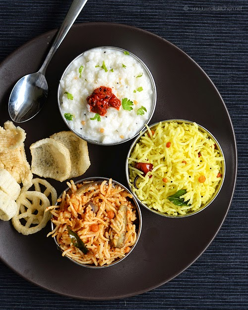

Adayar Anandha Bhavan
Pure Veg. Since - 1979
Menu for Lunch
SOUTH INDIAN MEALS : South Indian cuisine is predominantly plant-based. It is loaded with vegetables, legumes, and whole grains, making it a great source of fiber. Fiber is essential for a healthy digestive system, and it can also reduce the risk of heart disease and certain types of cancer

Items included
- South Indian Meals comes with huge spread of rice,
- Sambar - made with lentils, mixed vegetables, tamarind, herbs, spices & a special aromatic spice powder known as sambar powder
- Rasam - a sweet-sour stock made from either kokum or tamarind, along with tomato and lentil, added spices and garnish.
- And curd with porial, kootu, varuval, appalam, payasam, vadai & pickle.
| SOUTH INDIAN MEALS | RATINGS |
|---|---|
| 2019 |  4.0 /5
4.0 /5
|
| 2021 |
3.0 /5
|
| 2023 |
4.0 /5
|
VARIETY RICE : Whole grain rice varieties contain the bran and germ, providing more of specific nutrients like fiber, protein, antioxidants, and certain vitamins and minerals.
Items included
- Typically consists of various rice varieties of 3 flavour,
- Such as puliyodharai
- Coconut rice
- Mixed Veggie biriyani rice
- Puliyodharai rice - made of roasting lentils, red chilies and spices to perfection.
- Coconut rice - Combination of coconut milk, water, sugar, and salt in a medium saucepan
- Mixed Veggie biryani - made of basmati rice, mix veggies containing carrots, peas, potato, cauliflower and beans with herbs & biryani spices.
| VARIETY-RICE | RATINGS |
|---|---|
| 2019 |
2.0 /5
|
| 2021 |
2.0 /5
|
| 2023 |
4.0 /5
|